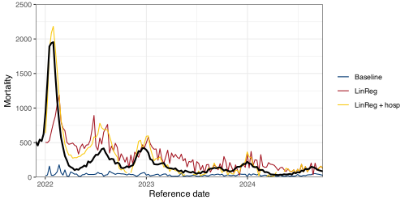
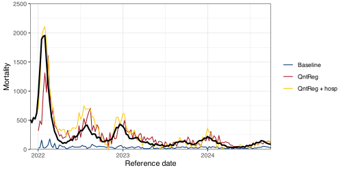

An `epi_df` object, 150,951 x 5 with metadata:
* geo_type = nation
* time_type = day
* other_keys = hr
* as_of = 2024-04-13
# A tibble: 150,951 × 5
geo_value hr time_value cases deaths
* <chr> <chr> <date> <dbl> <dbl>
1 AB South 2020-03-05 0 0
2 AB Calgary 2020-03-05 1 0
3 AB Central 2020-03-05 0 0
4 AB Edmonton 2020-03-05 0 0
5 AB North 2020-03-05 0 0
6 AB Other 2020-03-05 0 0
7 AB South 2020-03-06 0 0
8 AB Calgary 2020-03-06 0 0
9 AB Central 2020-03-06 0 0
10 AB Edmonton 2020-03-06 0 0
# ℹ 150,941 more rows
Computed separately over geographies (and other groups).
epi_slide( .x, .f, ..., # for tidy-evaluation.window_size =NULL,.align =c("right", "center", "left"),.ref_time_values =NULL, # at which time values do I calculate the function.new_col_name =NULL, # add a new column with this name rather than the default.all_rows =FALSE# do return all available time_values, or only the ones with a result)
.f “sees” a data set with a time value and other columns
That data is labeled with
A reference time (the time around which the window is taken)
A grouping key
epi_slide() is very general, often too much so.
We already saw the most common special case epi_slide_mean()
For other common cases, there is epi_slide_opt()
Really ugly, but actually deployed slide functions
Function to flag outliers for corrections during late-2020 and early-2021
flag_covid_outliers <-function(signal, sig_cut =2.75, size_cut =20, sig_consec =1.2) { signal <- rlang::enquo(signal)function(x, g, t) { .fns <-list(m =~mean(.x, na.rm =TRUE), med =~median(.x, na.rm =TRUE), sd =~sd(.x, na.rm =TRUE), mad =~median(abs(.x -median(.x))) ) fs <-filter(x, time_value <= t) |>summarise(across(!!signal, .fns, .names ="{.fn}")) ss <-summarise(x, across(!!signal, .fns, .names ="{.fn}"))mutate( x, ftstat =abs(!!signal - fs$med) / fs$sd, # mad in denominator is wrong scale, ststat =abs(!!signal - ss$med) / ss$sd, # basically results in all the data flaggedflag = (abs(!!signal) > size_cut &!is.na(ststat) & ststat > sig_cut) |# best case (is.na(ststat) &abs(!!signal) > size_cut &!is.na(ftstat) & ftstat > sig_cut) |# use filter if smoother is missing (!!signal <-size_cut & (!is.na(ststat) |!is.na(ftstat))), # big negativeflag = flag |# these allow smaller values to also be outliers if they are consecutive (lead(flag) &!is.na(ststat) & ststat > sig_consec) | (lag(flag) &!is.na(ststat) & ststat > sig_consec) | (lead(flag) &is.na(ststat) & ftstat > sig_consec) | (lag(flag) &is.na(ststat) & ftstat > sig_consec) ) |>filter(time_value == t) |>pull(flag) }}
Really ugly, but actually deployed slide functions
Using lm() with mortality and hospitalizations as a predictor
Using rq() and only mortality predictors
Using rq() with mortality and hospitalizations as a predictor
reg1_settings <-list(predictors =tribble(~varname, ~max_abs_shift_days, ~max_n_shifts,"mortality", 35, 3, ),min_n_training_per_predictor =30, # or else exclude predictordays_until_target_semistable =7*7, # filter out unstable when training (and evaluating)min_n_training_intersection =20, # or else raise errormax_n_training_intersection =Inf# or else filter down rows)
Comparison: linear regression

Comparison: quantile regression

Evaluations
Nowcaster
MAE
MAPE
Baseline
197.43
75.28
LinReg
172.03
106.74
LinReg + hosp
100.49
58.17
QuantReg
103.70
48.81
QuantReg + hosp
93.33
48.94
Aside on nowcasting
To many Epis, nowcasting means estimate the instantaneous reproduction number, \(R_t\)
Example: Reported COVID-19 cases in British Columbia (Jan. 2020 – Apr. 2023)